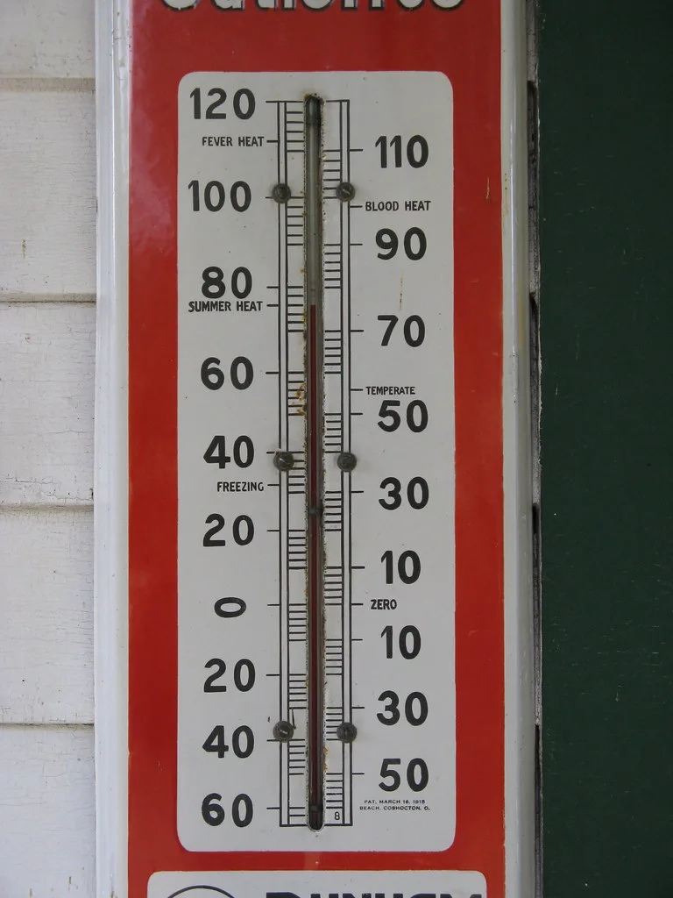

서울 전역 첫 '폭염중대경보'…낮 최고 38도, 온열질환 2200명 넘어
4일 오전 11시를 기해 서울 전역에 '폭염중대경보'가 발효됐다. 폭염중대경보는 올해 새롭게 신설된 폭염특보 중 최고 단계로, 서울에 이 경보가 내려진 것은 관측 이래 이번이 처음이다. 전날인 3일 서울 서남권과 동남권에 먼저 발효된 데 이어, 4일 오전 서북권과 동북권까지 확대되면서 서울 전 지역이 최고 단계 폭염 경보에 들어갔다. 기상청은 서울 전역이 이례적으로 하루 사이에 최고 단계 특보로 격상된 것을 두고 이번 여름 더위가 그만큼 심상치 않다는 신호라고 설명했다.
기상청에 따르면 이날 서울의 낮 최고기온은 38도까지 올랐고, 체감온도는 39도를 웃도는 지역도 있었다. 폭염중대경보는 최고체감온도가 35도 이상인 상태가 이틀 이상 이어진 가운데 체감온도가 38도 이상으로 오르거나, 하루 최고기온이 39도 이상으로 예상될 때 발표된다. 생명을 위협할 수 있는 수준의 더위라는 것이 기상청의 설명이다. 기존 폭염경보보다 한 단계 위인 이 특보는 올해 처음 도입돼, 시행 이후 서울에서 발령된 것도 이번이 처음이다.
폭염중대경보는 서울에 그치지 않고 수도권 전역으로 번지고 있다. 경기 지역 14곳과 인천 강화군에도 같은 단계의 경보가 내려지면서, 수도권 상당수 지역이 최고 수준의 폭염 위험에 노출된 상태다. 기상당국은 당분간 무더위가 이어질 것으로 내다보면서 낮 시간대 야외활동을 자제하고 충분한 수분을 섭취할 것을 당부했다. 특히 그늘이 없는 도심 아스팔트 위나 실외 작업장에서는 체감온도가 예보치보다 더 높게 느껴질 수 있어 각별한 주의가 필요하다고 덧붙였다.

더위가 이어지면서 온열질환자도 빠르게 늘고 있다. 질병관리청의 온열질환 응급실감시체계 집계를 보면 지난 5월 15일부터 8월 3일까지 누적 온열질환자는 2221명에 달했고, 이 가운데 19명이 목숨을 잃은 것으로 추정된다. 특히 하루 새 186명의 환자가 새로 보고돼 올해 들어 일일 최다 기록을 갈아치웠다. 온열질환자 수가 이처럼 단기간에 급증한 것은 폭염중대경보가 전국으로 확산한 최근 며칠 사이의 흐름과 맞물려 있다는 분석이 나온다.
온열질환자는 논밭이나 공사 현장 등 야외에서 일하는 고령층과 근로자에게 특히 집중되는 경향을 보였다. 보건당국은 폭염 특보가 발효된 지역의 지방자치단체에 무더위쉼터 운영 시간을 연장하고, 홀로 사는 어르신 등 취약계층에 대한 안전 확인을 강화하도록 요청했다. 공사 현장에서는 한낮 시간대 옥외 작업을 조정하라는 권고도 함께 내려졌다. 안전보건공단도 사업장을 대상으로 폭염 대응 수칙을 안내하며 산업재해 예방에 나섰다.

기상청은 이번 무더위가 당분간 이어질 것으로 전망하면서도, 다음 주 태풍의 북상 여부가 폭염의 지속 기간을 좌우할 변수가 될 수 있다고 밝혔다. 태풍이 한반도에 근접할 경우 일시적으로 기온이 낮아질 수 있지만, 진로에 따라서는 오히려 무더위를 더 끌어올릴 가능성도 있어 예단하기는 이르다는 설명이다.
정부와 지자체는 폭염을 재난 수준의 위기로 보고 대응 체계를 가동하고 있다. 행정안전부는 전국 지자체에 폭염 대응 상황판을 통해 실시간 상황을 공유하도록 했고, 각 지역 재난안전대책본부는 취약계층 보호와 온열질환 예방 홍보에 행정력을 집중하고 있다. 당분간 낮 시간대 외출을 최소화하고 충분한 휴식과 수분 섭취를 지키는 것이 무엇보다 중요하다는 것이 전문가들의 공통된 조언이다.